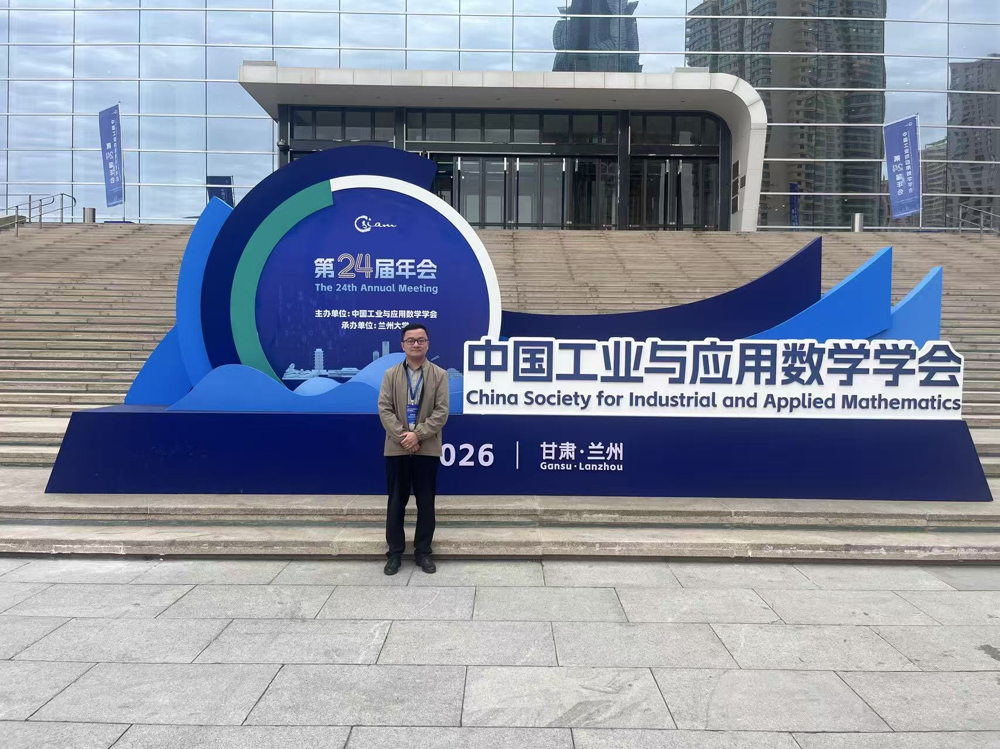
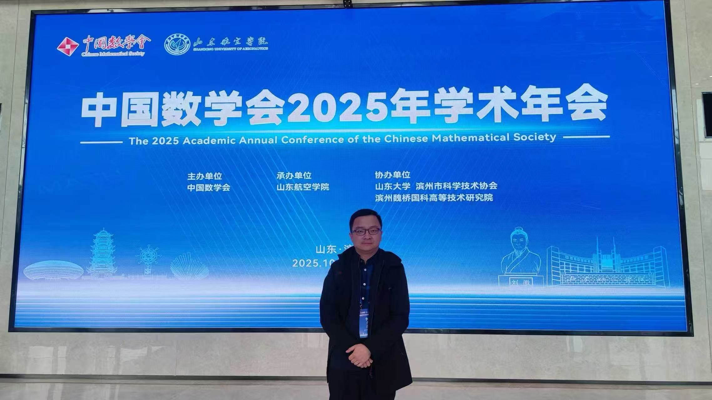

Zijin Li 李子劲
Associate Professor · School of Mathematics and Statistics · Nanjing University of Information Science and Technology
Deputy Director, Research Center for Mathematical Sciences, Nanjing University of Information Science and Technology

About
I am an associate professor and supervise master’s students in the School of Mathematics and Statistics at Nanjing University of Information Science and Technology. I earned my bachelor’s degree and PhD from Nanjing University in 2012 and 2019, respectively. During my PhD, I spent two years at the University of California, Riverside, as part of a joint doctoral training program. From 2023 to 2025, I conducted postdoctoral research at the Academy of Mathematics and Systems Science, Chinese Academy of Sciences. My current research focuses on initial-boundary value problems for partial differential equations in fluid mechanics, particularly those involving slip boundary conditions.
Research
- Partial differential equations
- Mathematical problems in fluid mechanics
Papers
Journal publications
2026
-
Global axisymmetric solution to the 3D incompressible inhomogeneous Navier–Stokes equations
Discrete Contin. Dyn. Syst. 54 (2026), 87–112. · MR5097163 · DOI 10.3934/dcds.2026028
-
Frontiers of Mathematics (2026). · DOI 10.1007/s11464-025-0144-7
-
On a one-component blow-up criterion for inhomogeneous axially symmetric Navier–Stokes equations
Math. Methods Appl. Sci. 49 (2026), no. 8, 8425–8435. · MR5074105 · DOI 10.1002/mma.70478
-
Remarks on regularity criteria for axisymmetric inhomogeneous Navier–Stokes equations
Calc. Var. Partial Differential Equations 65 (2026), no. 5, Paper No. 138, 21 pp. · MR5053918 · DOI 10.1007/s00526-026-03324-2
-
J. Differential Equations 461 (2026), Paper No. 114108, 21 pp. · MR5016702 · DOI 10.1016/j.jde.2026.114108
-
Global axisymmetric solution to the 3D incompressible anisotropic Navier–Stokes equations
J. Math. Pures Appl. (9) 205 (2026), Paper No. 103807, 37 pp. · MR4968086 · DOI 10.1016/j.matpur.2025.103807
2025
-
On local well-posedness of 3D ideal Hall-MHD system with an azimuthal magnetic field
Acta Math. Sin. (Engl. Ser.) 41 (2025), no. 12, 2921–2940. · MR5009561 · DOI 10.1007/s10114-025-4107-4
-
Calc. Var. Partial Differential Equations 64 (2025), no. 3, Paper No. 105, 33 pp. · MR4878968 · DOI 10.1007/s00526-025-02963-1
2024
-
On the lifespan of axisymmetric incompressible Euler equations with a small initial swirl
Z. Angew. Math. Phys. 75 (2024), no. 6, Paper No. 219, 11 pp. · MR4817743 · DOI 10.1007/s00033-024-02355-z
-
On Leray’s problem in an infinitely long pipe with the Navier-slip boundary condition
Sci. China Math. 67 (2024), no. 4, 819–854. · MR4721849 · DOI 10.1007/s11425-022-2129-y
-
Finite speed axially symmetric Navier–Stokes flows passing a cone
J. Funct. Anal. 286 (2024), no. 10, Paper No. 110393, 116 pp. · MR4717708 · DOI 10.1016/j.jfa.2024.110393
2023
-
On the large data global well-posedness of inviscid axially symmetric MHD-Boussinesq system
Acta Appl. Math. 187 (2023), Paper No. 15, 22 pp. · MR4649405 · DOI 10.1007/s10440-023-00608-z
-
J. Differential Equations 377 (2023), 221–270. · MR4642206 · DOI 10.1016/j.jde.2023.08.043
-
J. Differential Equations 374 (2023), 737–760. · MR4634937 · DOI 10.1016/j.jde.2023.08.011
-
Commun. Contemp. Math. 25 (2023), no. 5, Paper No. 2250013, 26 pp. · MR4579983 · DOI 10.1142/S0219199722500134
-
Z. Angew. Math. Phys. 74 (2023), no. 1, Paper No. 9, 19 pp. · MR4517279 · DOI 10.1007/s00033-022-01909-3
2022
-
On a single-component regularity criterion for the non-resistive axially symmetric Hall-MHD system
Acta Appl. Math. 181 (2022), Paper No. 1, 17 pp. · MR4470266 · DOI 10.1007/s10440-022-00519-5
-
One component regularity criteria for the axially symmetric MHD-Boussinesq system
Discrete Contin. Dyn. Syst. 42 (2022), no. 5, 2333–2353. · MR4405270 · DOI 10.3934/dcds.2021192
-
A single-component BKM-type regularity criterion for the inviscid axially symmetric Hall-MHD system
J. Math. Fluid Mech. 24 (2022), no. 1, Paper No. 16, 19 pp. · MR4365157 · DOI 10.1007/s00021-021-00651-6
-
Critical conditions on wθ imply the regularity of axially symmetric MHD-Boussinesq systems
J. Math. Anal. Appl. 505 (2022), no. 1, Paper No. 125451, 18 pp. · MR4283877 · DOI 10.1016/j.jmaa.2021.125451
2021
-
NoDEA Nonlinear Differential Equations Appl. 28 (2021), no. 2, Paper No. 12, 14 pp. · MR4210750 · DOI 10.1007/s00030-021-00674-y
2020
-
Liouville theorem of axially symmetric Navier–Stokes equations with growing velocity at infinity
Nonlinear Anal. Real World Appl. 56 (2020), 103159, 8 pp. · MR4101499 · DOI 10.1016/j.nonrwa.2020.103159
2019
-
On the vanishing of some D-solutions to the stationary magnetohydrodynamics system
J. Math. Fluid Mech. 21 (2019), no. 4, Paper No. 52, 13 pp. · MR4010662 · DOI 10.1007/s00021-019-0457-y
-
Some remarks on regularity criteria of axially symmetric Navier–Stokes equations
Commun. Pure Appl. Anal. 18 (2019), no. 3, 1333–1350. · MR3917709 · DOI 10.3934/cpaa.2019064
2018
-
Schauder estimates of the uniformly elliptic equation with a inverse-square potential
J. Math. Anal. Appl. 464 (2018), no. 2, 1352–1365. · MR3798662 · DOI 10.1016/j.jmaa.2018.04.064
2017
-
J. Differential Equations 263 (2017), no. 1, 57–87. · MR3631301 · DOI 10.1016/j.jde.2017.02.029
Preprints
-
Refined critical flux bounds for Leray’s problem in a pipe with the Navier-slip boundary
-
A double-logarithmic lifespan bound for axisymmetric Euler equations with a small initial swirl
-
A wall-law approximation for Jeffery-Hamel flows in rough wedges
-
On the axisymmetric Navier–Stokes flow passing a cone with the total-slip boundary condition
Research projects
-
2021–2023
Inverse-square potentials and axisymmetric solutions to systems of partial differential equations for viscous incompressible fluids
Young Scientists Fund (Category C), National Natural Science Foundation of China · CNY 240,000 · Completed, Principal Investigator
-
2020–2023
Global regularity of classical solutions to the three-dimensional MHD–Boussinesq equations
Jiangsu Provincial Basic Research Program · CNY 200,000 · Completed, Principal Investigator
-
2024–2025
Axisymmetric solutions to the incompressible Navier–Stokes equations in pipes with slip boundary conditions
General Program, China Postdoctoral Science Foundation · CNY 80,000 · Completed, Principal Investigator
Academic talks
-
2026.10.08–2026.10.11
Axisymmetric Navier–Stokes flow passing a cone with the slip boundary condition
24th Annual Meeting of the China Society for Industrial and Applied Mathematics (CSIAM 2026) · Lanzhou, Gansu

Presenting at CSIAM 2026 in Lanzhou 
At the CSIAM 2026 conference venue -
2025.10.16–2025.10.20
On Leray’s problem with the Navier-slip boundary
2025 Annual Meeting of the Chinese Mathematical Society · Binzhou, Shandong

Presenting at the 2025 CMS Annual Meeting in Binzhou 
At the 2025 CMS Annual Meeting venue


Teaching
Undergraduate teaching
- Complex Analysis and Integral Transforms II (2021–2026)
- Advanced Mathematics (2021–2023)
- Linear Algebra (2020–2021)
- Partial Differential Equations II (taught in English, 2020)
- Differential Equations (taught in English, 2019-2020)
Graduate teaching
- Nonlinear Evolution Equations (2026)
- Selected Topics in Nonlinear Partial Differential Equations (2020–2021)
- Seminar on Frontiers in Nonlinear Partial Differential Equations (2021–2026)
- Differential Equations (master’s course) · National Smart Teaching Platform for Graduate Education (2022)
Graduate supervision
Master’s graduates
-
2021.09.01–2024.06.30
Meixian Yang
Thesis: Regularity Criteria for Solutions to the Three-Dimensional Non-Resistive Axisymmetric Hall-MHD System
-
2022.09.01–2025.06.30
Zhaojun Xing
Thesis: Well-Posedness and the Vanishing Viscosity Limit for Solutions to the Three-Dimensional Axisymmetric MHD-Boussinesq System
-
2023.09.01–2026.06.30
Taoran Zhou
Thesis: The uniqueness and lifespan of several types of incompressible fluid dynamic equation solutions
Current master’s students
-
Enrolled 2024.09.08
Linbin Yang
Expected graduation: 2027.06.30
-
Enrolled 2025.09.01
Zhipeng Wu
Expected graduation: 2028.06.30
-
Enrolled 2026.09.01
Xu Xiao
Expected graduation: 2029.06.30
Education
-
2008.09–2012.08
BSc in Basic and Applied Mathematics, Department of Mathematics, Nanjing University
-
2012.09–2019.03
PhD, Department of Mathematics, Nanjing University
Advisor: Professor Huicheng Yin
-
During PhD · 2016.11–2018.11
Joint doctoral training, Department of Mathematics, University of California, Riverside
Advisor: Professor Qi S. Zhang
Appointments
-
2019.03–present
Lecturer, then Associate Professor, School of Mathematics and Statistics, Nanjing University of Information Science and Technology
-
2023.11–2025.11
Postdoctoral Researcher, Academy of Mathematics and Systems Science, Chinese Academy of Sciences
Postdoctoral advisor: Professor Ping Zhang, Academician of the Chinese Academy of Sciences
Honors and service
Honors
- Selected for Nanjing’s Young and Middle-Aged Top Talent Program (2024)
- Third Prize, Jiangsu Provincial Mathematics Micro-Course Teaching Competition for Higher Education (2020)
- Outstanding Class Adviser, Nanjing University of Information Science and Technology (2022)
Roles and professional service
- Deputy Director, Research Center for Mathematical Sciences, Nanjing University of Information Science and Technology (2026–present)
- MathSciNet reviewer, American Mathematical Society (2017–present)
- zbMATH reviewer, German Mathematical Society (2025–present)
Academic visits
-
2026.10–2026.11
Visiting Scholar, Department of Mathematical Sciences, University of Bath, United Kingdom
Invited by Dr Tobias Barker.

On the University of Bath campus 
Research discussion at the University of Bath 
Giving a talk at the University of Bath -
2023.11–2023.12
Visiting Scholar, Department of Mathematics, Chung-Ang University, South Korea
Invited by Professor Dongho Chae, a member of the Korean Academy of Science and Technology.

Research discussion with Professor Dongho Chae 
Giving a talk at Chung-Ang University 
Group photo at the joint seminar at Chung-Ang University -
2015.11
University of California, Riverside, United States
Invited by Professor Qi S. Zhang.
-
2014.12
Visiting Scholar, National University of Singapore
Invited by Professor Xingwang Xu.